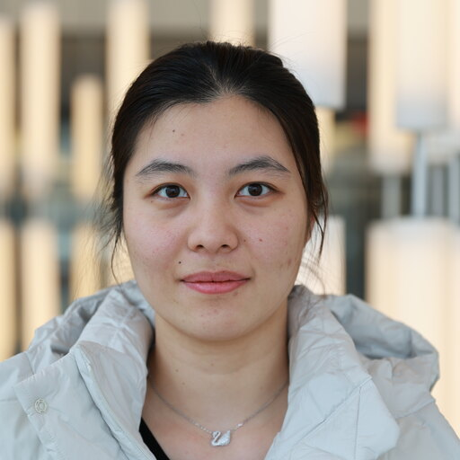

PhD student in Computer Science, Stony Brook University.
Human-centered AI for clinical decision support.
I am a PhD student in the Department of Computer Science at Stony Brook University, advised by Fusheng Wang.
My research builds machine learning models for clinical risk prediction that clinicians can actually interrogate — multimodal architectures over structured EHR data and clinical notes, interpretable risk stratification, and decision support tools designed together with the patients and clinicians who will use them.
Within a PCORI-funded project where patients and clinicians co-define prediction targets, features, and evaluation criteria, I build opioid use disorder risk models and the dashboard clinicians use to compare them across cohorts.
Fusing structured records with unstructured clinical notes at the hidden-state level, using locally deployed LLMs so protected health information stays on-premise and each prediction stays traceable to the documentation behind it.
Registry-scale analyses of vaccination uptake, geographic access, and climate-related health outcomes across Long Island and New York State.
Biomedical informatics group of Fusheng Wang
CSE351 Data Science Fundamentals · CSE527 Computer Vision · CSE581 Theory
Multi-horizon opioid use disorder risk prediction using the All of Us cohort
Sequential models for opioid use disorder prediction across heterogeneous EHR sources